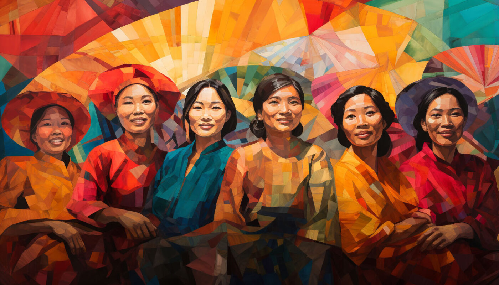
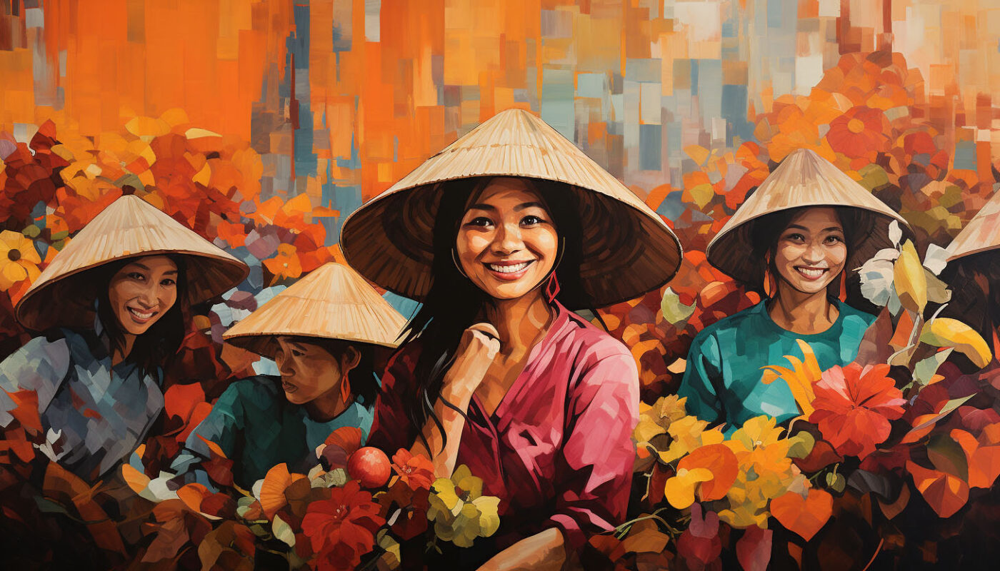
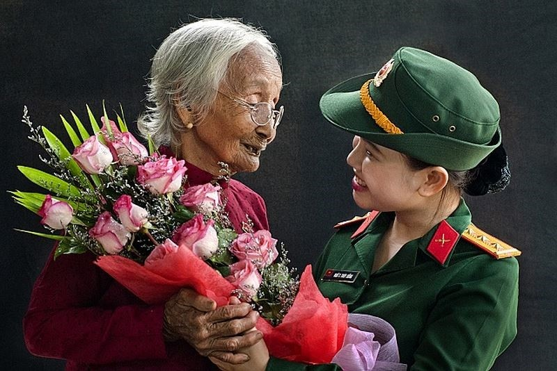
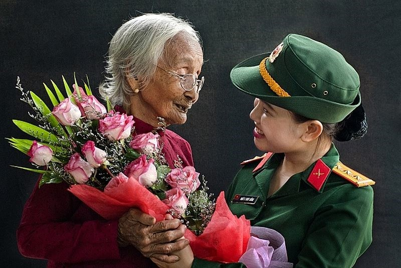

VIET NAM
越南女性在社会中扮演着重要的角色，她们以勤劳、坚韧和智慧著称。越南文化深受儒家思想影响，强调家庭价值观，女性在家庭中扮演着贤妻良母的角色。同时，越南女性也积极参与社会经济活动，她们在各行各业中展现出自己的才华和能力。
以下是越南女性的一些特点：
- 勤劳能干： 越南女性以勤劳著称，她们在家庭和工作中都承担着重要的责任。许多越南女性在农田里辛勤劳作，为家庭的生计做出贡献。同时，她们也积极参与到城市中的各种工作中，如服务业、制造业和教育行业等。
- 坚韧不拔： 越南经历了长期的战争和困难时期，越南女性在这些困难中展现出了坚韧不拔的精神。她们在逆境中保持乐观，积极面对生活的挑战，为家庭和国家的未来努力奋斗。
- 智慧聪颖： 越南女性重视教育，她们在学业上表现出色。许多越南女性在国内外接受高等教育，并在各自的领域取得了成就。她们在科学、技术、文学和艺术等领域都有杰出的代表。
- 家庭观念强： 越南女性重视家庭，她们在家庭中扮演着重要的角色。她们照顾家庭成员的日常生活，教育子女，传承家庭的价值观。同时，她们也积极支持丈夫的事业，为家庭的幸福和稳定做出贡献。
- 积极参与社会经济活动： 越南女性积极参与社会经济活动，她们在各行各业中展现出自己的才华和能力。她们在政府、企业、教育和医疗等领域都有重要的代表。越南女性的参与为国家的经济发展和社会进步做出了重要贡献。
- 重视教育： 越南女性认为教育是改变命运的重要途径，她们努力为下一代提供更好的教育机会。许多越南女性在家庭中担任教育者的角色，教育子女成为有知识、有道德、有担当的人。
- 时尚爱美： 越南女性注重外表，她们喜欢穿着时尚的服装，打扮得体。越南的传统服装奥黛（Ao Dai）是越南女性的代表性服装，展现了她们的优雅和美丽。
- 尊重传统文化： 越南女性尊重传统文化，她们传承着越南的传统习俗和价值观。她们在节日庆典中穿着传统服装，参与传统的仪式和活动，保持着对祖先和文化的敬畏之心。
 

越南
越南是一个位于东南亚的国家，拥有丰富多样的历史文化。 越南拥有高山和绵长的海岸线，拥有多样而美丽的自然景观。 越南文化已经发展了多个世纪，并受到中国、日本、法国和美国等许多不同文化的影响。
越南人口民族和语言多样化，其中京族占多数，还有其他少数民族，如岱族、泰族、芒族和高棉族。
越南经济近年来快速增长，特别是自新冠肺炎疫情以来，越南已成为世界领先的农产品生产和出口国之一，工业和服务业也大幅增长。
旅游业在越南经济中也发挥着重要作用，拥有河内、胡志明市、顺化、会安和岘港等热门目的地。 越南拥有美丽的自然景观、悠久的文化遗产和多样化的美食，每年吸引数百万游客。